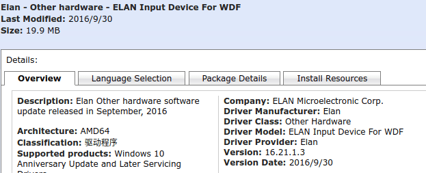
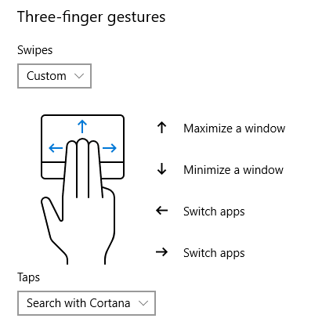

Win10笔记本触控板重生
改善Windows10笔记本触控板体验的方法！！
背景
一直以来，我都无比羡慕MacBook超强大的触控板，其可以脱离鼠标进行各种高效的操作。随着对笔记本使用的增加，我越来越忍受不了手里这台联想笔记本的“智障式”触摸板，并让我十分的好奇：“为什么Windows的触控板会如此难用？” 然而，这两天查找了各种资料，惊喜的发现这个问题是可以被解决的！
精确式触控(Precision Touchpad)
长久以来，在PC上触摸板的体验一直不尽人意。微软也一度试图解决这个问题，但PC厂商数量众多，产品也良莠不齐。面对这种状况，微软联合英特尔、义隆电子和新思科技提出“精确式触控板”概念。精确式触控板支持多点触控，并直接由Windows操作系统控制而非第三方驱动程序。相比与传统触摸板，精确式触摸板能够给用户提供更好的交互体验。
我的设备信息
- 5年老机联想Y500
- 操作系统：Windows 10 (Cumulative Update, Version 1706, x64-based Systems)
- 触控板厂商：Elan
- 触控板驱动： 联想适配，但2014年后不再更新。
操作步骤
- 确定触控板厂商：Elan/Synaptics。 我的是Elan，其他Synaptics触控板可以参考这篇->文章
- 下载精确式触控驱动。 去微软官方的Microsoft update catalog上搜索
elan wdf，下载最新版驱动。 这里有几个细节：
- 该驱动随Win10更新而更新，尽量下载最新版。
- 当时我直觉认为列表最上面的是最新版，然后直接点选了第一条的
Elan - Other hardware - ELAN Input Device For WDF，信息如下：  然后，按之后步骤更新了驱动，是正常有效的。但是后来才发现此驱动更新日期为2016/9/30，不是最新版，但也不影响使用（摊手.jpg)...且效果提升已然很好，所以没有试其他的，你们可以自己试下其他的驱动。
将下载的驱动放到任意一个空的文件夹，并解压。
双击dpinst.exe运行。 参考这篇是建议手动查找驱动然后更新的方法，比较麻烦，而且试的时候我的笔记本一直报错，索性选择直接运行解压后的dpinst.exe文件，发现是这样也是可以的。 更新： 昨天更新了win10系统至1803，触控板的驱动失效了，需要重新装，发现直接运行dpinst.exe并没有效果，于是按照参考文章手动更新后才生效，方法： >打开设备管理器，选择自己的触摸板设备，右键选择更新驱动。在弹出的窗口中选择“浏览我的计算机以查找驱动程序”，之后选则“让我从计算机上的可用驱动程序列表中选取”，再在弹出的窗口中选择
从磁盘安装，选择刚刚才解压目录中的AutoRun(我点了ETD.inf)，一路next，之后重启就大功告成了。重启电脑后生效，系统设置中出现精确式触控的设置选项： 
享受飞一般效率提升吧！！
注意：
- 此方法在我的电脑（联想Y500）上是可行的，其余厂商如Thinkpad、Dell、神州、微星等等在这篇文章中都有成功案例。但是不保证每台机器都有效，也有评论说按此方法更新驱动后出现各种问题，请自己斟酌。
- 不想冒风险重装的，也可以试着通过修改注册表的方式更改设置：
Win + r打开运行，输入regedit进入注册表页面。- 找到Elan驱动的注册表位置
[HKEY_CURRENT_USER\Software\Elantech]，参考以下两篇文章操作： 修改注册表键值扩充y50触摸板功能 关于elan触摸板实现三指点击的方法 - 修改完成后，重启才能生效。
- 如果失败，或者没用可以再改回来～
- 安装完成后，一定记得重启电脑使更改生效。我弄完后没重启，发现触控板虽然可以识别，但是点击确认只能按压，无法通过触摸完成，然后绕了很多弯路都没解决，最后重启了才变正常(当然，也可能是因为没安装最新版驱动的原因)。
- 发现三指或四指有时有误判的情况，可以适当的将手指略分开一点，误判会减少许多。
- 新装的驱动注册表位置：
[HKEY_CURRENT_USER\Software\Microsoft\Windows\CurrentVersion\PrecisionTouchPad]，可以自己继续更改探索～ ## 参考源 - 为Synaptics与Elan驱动的触控板安装微软精确式触控板驱动
- ELAN Input Device for WDF Driver 16.21.13.3 for Windows 10 Anniversary Update 64-bit
- Two finger right click does not work
- 修改注册表键值扩充y50触摸板功能
- 关于elan触摸板实现三指点击的方法